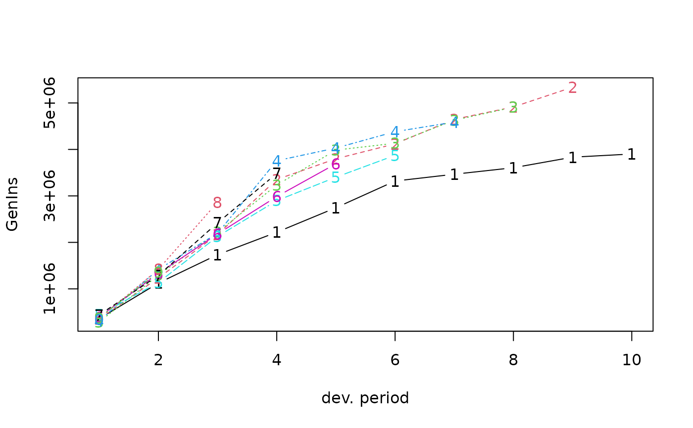
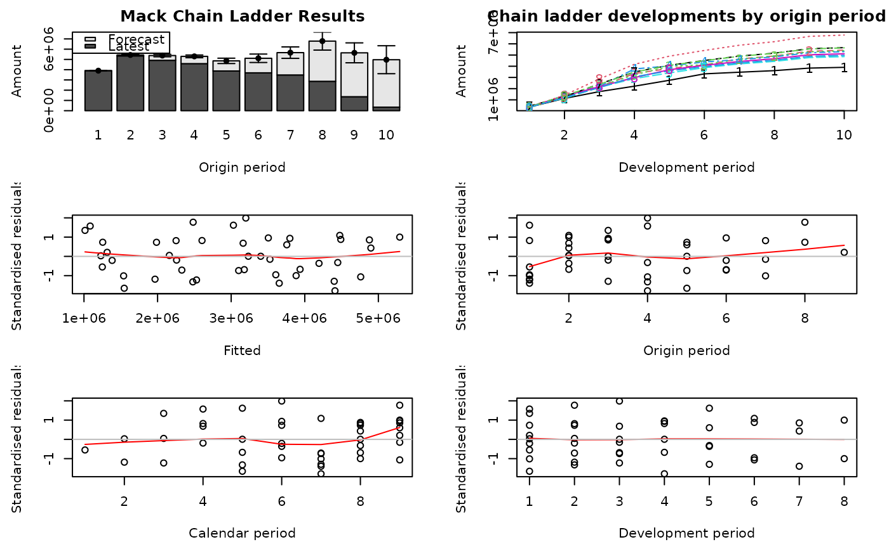
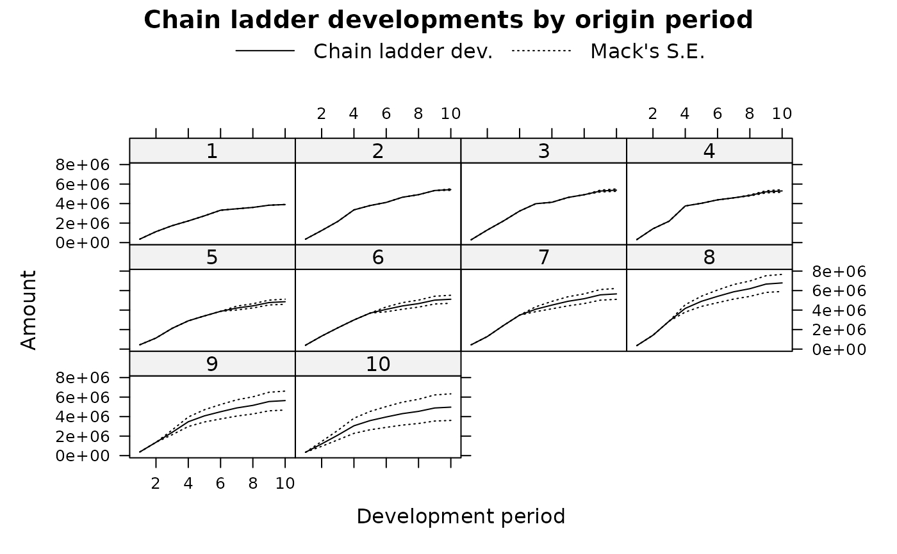
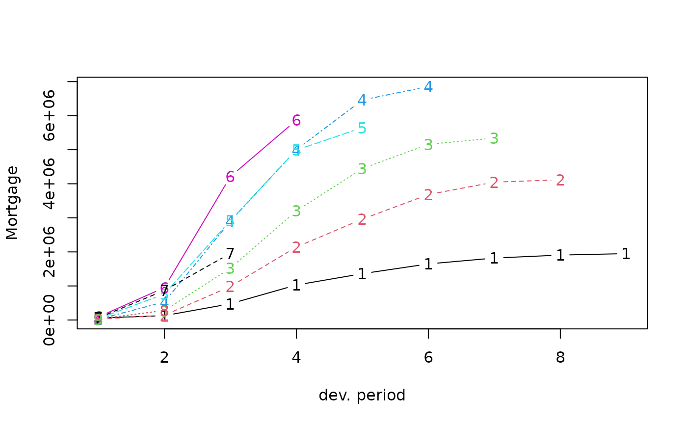
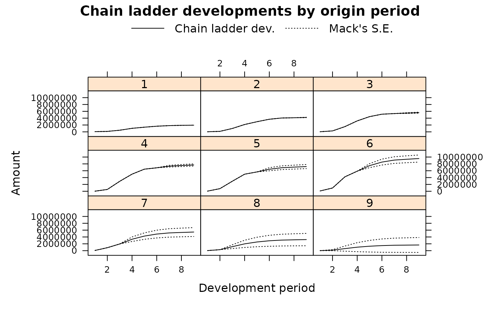
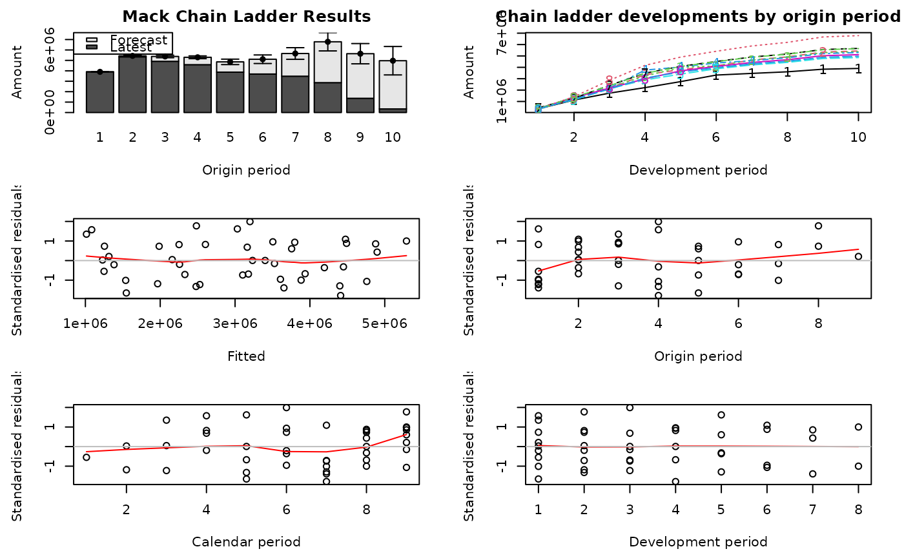
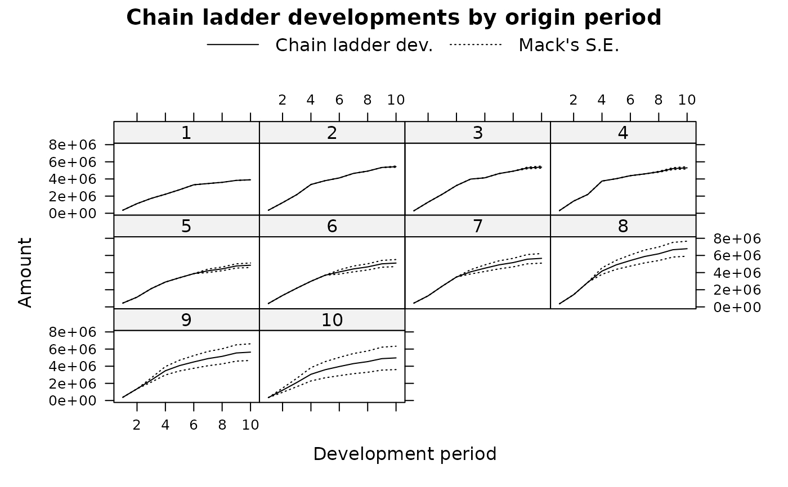
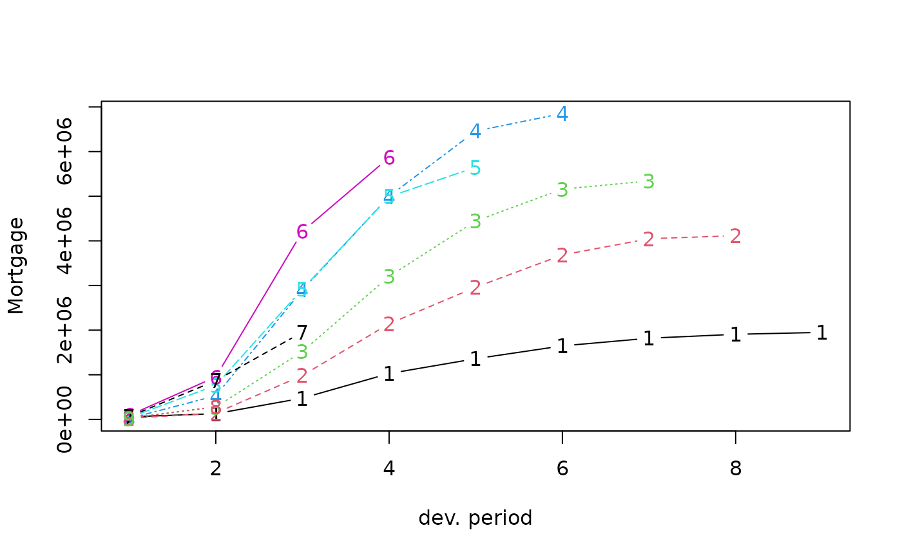
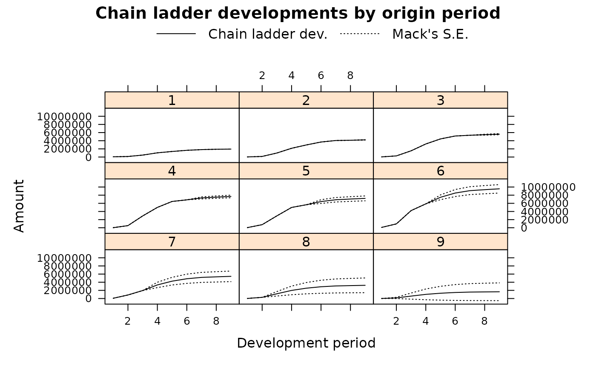

Mack Chain-Ladder Model
MackChainLadder.RdThe Mack chain-ladder model forecasts future claims developments based on a historical cumulative claims development triangle and estimates the standard error around those.
Usage
MackChainLadder(Triangle, weights = 1, alpha=1, est.sigma="log-linear",
tail=FALSE, tail.se=NULL, tail.sigma=NULL, mse.method="Mack")Arguments
- Triangle
cumulative claims triangle. Assume columns are the development period, use transpose otherwise. A (mxn)-matrix \(C_{ik}\) which is filled for \(k \leq n+1-i; i=1,\ldots,m; m\geq n \), see
qpaidfor how to use (mxn)-development triangles with m<n, say higher development period frequency (e.g quarterly) than origin period frequency (e.g accident years).- weights
weights. Default: 1, which sets the weights for all triangle entries to 1. Otherwise specify weights as a matrix of the same dimension as
Trianglewith all weight entries in [0; 1]. Hence, any entry set to 0 orNAeliminates that age-to-age factor from inclusion in the model. See also 'Details'- alpha
'weighting' parameters. Default: 1 for all development periods; alpha=1 gives the historical chain-ladder age-to-age factors, alpha=0 gives the straight average of the observed individual development factors and alpha=2 is the result of an ordinary regression of \(C_{i,k+1}\) against \(C_{i,k}\) with intercept 0, see also 'Details' below,
chainladderand Mack's 1999 paper- est.sigma
defines how to estimate \(sigma_{n-1}\), the variability of the individual age-to-age factors at development time \(n-1\). Default is "log-linear" for a log-linear regression, "Mack" for Mack's approximation from his 1999 paper. Alternatively the user can provide a numeric value. If the log-linear model appears to be inappropriate (p-value > 0.05) the 'Mack' method will be used instead and a warning message printed. Similarly, if Triangle is so small that log-linear regression is being attempted on a vector of only one non-NA average link ratio, the 'Mack' method will be used instead and a warning message printed.
- tail
can be logical or a numeric value. If
tail=FALSEno tail factor will be applied, iftail=TRUEa tail factor will be estimated via a linear extrapolation of \(log(chain-ladder factors - 1)\), iftailis a numeric value than this value will be used instead.- tail.se
defines how the standard error of the tail factor is estimated. Only needed if a tail factor > 1 is provided. Default is
NULL. Iftail.seisNULL,tail.seis estimated via "log-linear" regression, iftail.seis a numeric value than this value will be used instead.- tail.sigma
defines how to estimate individual tail variability. Only needed if a tail factor > 1 is provided. Default is
NULL. Iftail.sigmaisNULL,tail.sigmais estimated via "log-linear" regression, iftail.sigmais a numeric value than this value will be used instead- mse.method
method used for the recursive estimate of the parameter risk component of the mean square error. Value "Mack" (default) coincides with Mack's formula; "Independence" includes the additional cross-product term as in Murphy and BBMW. Refer to References below.
Details
Following Mack's 1999 paper let \(C_{ik}\) denote the cumulative loss amounts of origin period (e.g. accident year) \(i=1,\ldots,m\), with losses known for development period (e.g. development year) \(k \le n+1-i\). In order to forecast the amounts \(C_{ik}\) for \(k > n+1-i\) the Mack chain-ladder-model assumes: $$\mbox{CL1: } E[ F_{ik}| C_{i1},C_{i2},\ldots,C_{ik} ] = f_k \mbox{ with } F_{ik}=\frac{C_{i,k+1}}{C_{ik}} $$
$$\mbox{CL2: } Var( \frac{C_{i,k+1}}{C_{ik}} | C_{i1},C_{i2}, \ldots,C_{ik} ) = \frac{\sigma_k^2}{w_{ik} C^\alpha_{ik}} $$ $$\mbox{CL3: } \{ C_{i1},\ldots,C_{in}\}, \{ C_{j1},\ldots,C_{jn}\},\mbox{ are independent for origin period } i \neq j $$ with \(w_{ik} \in [0;1]\), \(\alpha \in \{0,1,2\}\). If these assumptions hold, the Mack chain-ladder gives an unbiased estimator for IBNR (Incurred But Not Reported) claims.
Here \(w_{ik} are the \code{weights} from above.\)
The Mack chain-ladder model can be regarded as a special form of a
weighted linear regression
through the origin for each development period:
lm(y ~ x + 0, weights=weights/x^(2-alpha)),
where y is the vector of claims at development period
\(k+1\) and x is the vector of claims at development period
\(k\).
It is necessary, before actually applying the model, to check if the main assumptions behind the model (i.e. Calendar Year Effect and Correlation between subsequent Accident Years, see dfCorTest, cyEffTest) are verified.
Value
MackChainLadder returns a list with the following elements
- call
matched call
- Triangle
input triangle of cumulative claims
- FullTriangle
forecasted full triangle
- Models
linear regression models for each development period
- f
chain-ladder age-to-age factors
- f.se
standard errors of the chain-ladder age-to-age factors f (assumption CL1)
- F.se
standard errors of the true chain-ladder age-to-age factors \(F_{ik}\) (square root of the variance in assumption CL2)
- sigma
sigma parameter in CL2
- Mack.ProcessRisk
variability in the projection of future losses not explained by the variability of the link ratio estimators (unexplained variation)
- Mack.ParameterRisk
variability in the projection of future losses explained by the variability of the link-ratio estimators alone (explained variation)
- Mack.S.E
total variability in the projection of future losses by the chain-ladder method; the square root of the mean square error of the chain-ladder estimate: \(\mbox{Mack.S.E.}^2 = \mbox{Mack.ProcessRisk}^2 + \mbox{Mack.ParameterRisk}^2\)
- Total.Mack.S.E
total variability of projected loss for all origin years combined
- Total.ProcessRisk
vector of process risk estimate of the total of projected loss for all origin years combined by development period
- Total.ParameterRisk
vector of parameter risk estimate of the total of projected loss for all origin years combined by development period
- weights
weights used
- alpha
alphas used
- tail
tail factor used. If tail was set to TRUE the output will include the linear model used to estimate the tail factor
References
Thomas Mack. Distribution-free calculation of the standard error of chain ladder reserve estimates. Astin Bulletin. Vol. 23. No 2. 1993. pp.213:225
Thomas Mack. The standard error of chain ladder reserve estimates: Recursive calculation and inclusion of a tail factor. Astin Bulletin. Vol. 29. No 2. 1999. pp.361:366
Murphy, Daniel M. Unbiased Loss Development Factors. Proceedings of the Casualty Actuarial Society Casualty Actuarial Society - Arlington, Virginia 1994: LXXXI 154-222
Buchwalder, Bühlmann, Merz, and Wüthrich. The Mean Square Error of Prediction in the Chain Ladder Reserving Method (Mack and Murphy Revisited). Astin Bulletin Vol. 36. 2006. pp.521:542
Author
Markus Gesmann markus.gesmann@gmail.com
Note
Additional references for further reading:
England, PD and Verrall, RJ. Stochastic Claims Reserving in General Insurance (with discussion), British Actuarial Journal 8, III. 2002
Barnett and Zehnwirth. Best estimates for reserves. Proceedings of the CAS, LXXXVI I(167), November 2000.
See also
See also qpaid for dealing with non-square triangles,
chainladder for the underlying chain-ladder method,
dfCorTest to check for Calendar Year Effect,
cyEffTest to check for Development Factor Correlation,
summary.MackChainLadder,
quantile.MackChainLadder,
plot.MackChainLadder and
residuals.MackChainLadder displaying results,
CDR.MackChainLadder for the one year claims development result.
Examples
## See the Taylor/Ashe example in Mack's 1993 paper
GenIns
#> dev
#> origin 1 2 3 4 5 6 7 8 9
#> 1 357848 1124788 1735330 2218270 2745596 3319994 3466336 3606286 3833515
#> 2 352118 1236139 2170033 3353322 3799067 4120063 4647867 4914039 5339085
#> 3 290507 1292306 2218525 3235179 3985995 4132918 4628910 4909315 NA
#> 4 310608 1418858 2195047 3757447 4029929 4381982 4588268 NA NA
#> 5 443160 1136350 2128333 2897821 3402672 3873311 NA NA NA
#> 6 396132 1333217 2180715 2985752 3691712 NA NA NA NA
#> 7 440832 1288463 2419861 3483130 NA NA NA NA NA
#> 8 359480 1421128 2864498 NA NA NA NA NA NA
#> 9 376686 1363294 NA NA NA NA NA NA NA
#> 10 344014 NA NA NA NA NA NA NA NA
#> dev
#> origin 10
#> 1 3901463
#> 2 NA
#> 3 NA
#> 4 NA
#> 5 NA
#> 6 NA
#> 7 NA
#> 8 NA
#> 9 NA
#> 10 NA
plot(GenIns)

plot(GenIns, lattice=TRUE)
 GNI <- MackChainLadder(GenIns, est.sigma="Mack")
GNI$f
#> [1] 3.490607 1.747333 1.457413 1.173852 1.103824 1.086269 1.053874 1.076555
#> [9] 1.017725 1.000000
GNI$sigma^2
#> [1] 160280.3275 37736.8550 41965.2130 15182.9027 13731.3239 8185.7716
#> [7] 446.6166 1147.3660 446.6166
GNI # compare to table 2 and 3 in Mack's 1993 paper
#> MackChainLadder(Triangle = GenIns, est.sigma = "Mack")
#>
#> Latest Dev.To.Date Ultimate IBNR Mack.S.E CV(IBNR)
#> 1 3,901,463 1.0000 3,901,463 0 0 NaN
#> 2 5,339,085 0.9826 5,433,719 94,634 75,535 0.798
#> 3 4,909,315 0.9127 5,378,826 469,511 121,699 0.259
#> 4 4,588,268 0.8661 5,297,906 709,638 133,549 0.188
#> 5 3,873,311 0.7973 4,858,200 984,889 261,406 0.265
#> 6 3,691,712 0.7223 5,111,171 1,419,459 411,010 0.290
#> 7 3,483,130 0.6153 5,660,771 2,177,641 558,317 0.256
#> 8 2,864,498 0.4222 6,784,799 3,920,301 875,328 0.223
#> 9 1,363,294 0.2416 5,642,266 4,278,972 971,258 0.227
#> 10 344,014 0.0692 4,969,825 4,625,811 1,363,155 0.295
#>
#> Totals
#> Latest: 34,358,090.00
#> Dev: 0.65
#> Ultimate: 53,038,945.61
#> IBNR: 18,680,855.61
#> Mack.S.E 2,447,094.86
#> CV(IBNR): 0.13
plot(GNI)

plot(GNI, lattice=TRUE)

## Different weights
## Using alpha=0 will use straight average age-to-age factors
MackChainLadder(GenIns, alpha=0)$f
#> [1] 3.566143 1.745557 1.451961 1.180984 1.111247 1.084818 1.052739 1.074753
#> [9] 1.017725 1.000000
# You get the same result via:
apply(GenIns[,-1]/GenIns[,-10],2, mean, na.rm=TRUE)
#> 2 3 4 5 6 7 8 9
#> 3.566143 1.745557 1.451961 1.180984 1.111247 1.084818 1.052739 1.074753
#> 10
#> 1.017725
## Only use the last 5 diagonals, i.e. the last 5 calendar years
calPeriods <- (row(GenIns) + col(GenIns) - 1)
(weights <- ifelse(calPeriods <= 5, 0, ifelse(calPeriods > 10, NA, 1)))
#> [,1] [,2] [,3] [,4] [,5] [,6] [,7] [,8] [,9] [,10]
#> [1,] 0 0 0 0 0 1 1 1 1 1
#> [2,] 0 0 0 0 1 1 1 1 1 NA
#> [3,] 0 0 0 1 1 1 1 1 NA NA
#> [4,] 0 0 1 1 1 1 1 NA NA NA
#> [5,] 0 1 1 1 1 1 NA NA NA NA
#> [6,] 1 1 1 1 1 NA NA NA NA NA
#> [7,] 1 1 1 1 NA NA NA NA NA NA
#> [8,] 1 1 1 NA NA NA NA NA NA NA
#> [9,] 1 1 NA NA NA NA NA NA NA NA
#> [10,] 1 NA NA NA NA NA NA NA NA NA
MackChainLadder(GenIns, weights=weights, est.sigma = "Mack")
#> MackChainLadder(Triangle = GenIns, weights = weights, est.sigma = "Mack")
#>
#> Latest Dev.To.Date Ultimate IBNR Mack.S.E CV(IBNR)
#> 1 3,901,463 1.0000 3,901,463 0 0 NaN
#> 2 5,339,085 0.9826 5,433,719 94,634 75,535 0.798
#> 3 4,909,315 0.9127 5,378,826 469,511 121,699 0.259
#> 4 4,588,268 0.8661 5,297,906 709,638 133,549 0.188
#> 5 3,873,311 0.7973 4,858,200 984,889 261,406 0.265
#> 6 3,691,712 0.7349 5,023,131 1,331,419 341,719 0.257
#> 7 3,483,130 0.6263 5,561,629 2,078,499 547,444 0.263
#> 8 2,864,498 0.4258 6,726,585 3,862,087 975,424 0.253
#> 9 1,363,294 0.2299 5,929,927 4,566,633 1,065,926 0.233
#> 10 344,014 0.0669 5,142,278 4,798,264 1,247,449 0.260
#>
#> Totals
#> Latest: 34,358,090.00
#> Dev: 0.65
#> Ultimate: 53,253,663.06
#> IBNR: 18,895,573.06
#> Mack.S.E 2,550,023.96
#> CV(IBNR): 0.13
## Tail
## See the example in Mack's 1999 paper
Mortgage
#> dev
#> origin 1 2 3 4 5 6 7 8 9
#> 1 58046 127970 476599 1027692 1360489 1647310 1819179 1906852 1950105
#> 2 24492 141767 984288 2142656 2961978 3683940 4048898 4115760 NA
#> 3 32848 274682 1522637 3203427 4445927 5158781 5342585 NA NA
#> 4 21439 529828 2900301 4999019 6460112 6853904 NA NA NA
#> 5 40397 763394 2920745 4989572 5648563 NA NA NA NA
#> 6 90748 951994 4210640 5866482 NA NA NA NA NA
#> 7 62096 868480 1954797 NA NA NA NA NA NA
#> 8 24983 284441 NA NA NA NA NA NA NA
#> 9 13121 NA NA NA NA NA NA NA NA
m <- MackChainLadder(Mortgage)
round(summary(m)$Totals["CV(IBNR)",], 2) ## 26% in Table 6 of paper
#> [1] 0.26
plot(Mortgage)

# Specifying the tail and its associated uncertainty parameters
MRT <- MackChainLadder(Mortgage, tail=1.05, tail.sigma=71, tail.se=0.02, est.sigma="Mack")
MRT
#> MackChainLadder(Triangle = Mortgage, est.sigma = "Mack", tail = 1.05,
#> tail.se = 0.02, tail.sigma = 71)
#>
#> Latest Dev.To.Date Ultimate IBNR Mack.S.E CV(IBNR)
#> 1 1,950,105 0.95238 2,047,610 97,505 106,544 1.093
#> 2 4,115,760 0.93126 4,419,573 303,813 179,977 0.592
#> 3 5,342,585 0.90736 5,888,041 545,456 249,708 0.458
#> 4 6,853,904 0.84904 8,072,571 1,218,667 417,857 0.343
#> 5 5,648,563 0.74548 7,577,086 1,928,523 670,156 0.347
#> 6 5,866,482 0.58427 10,040,732 4,174,250 1,127,984 0.270
#> 7 1,954,797 0.34209 5,714,195 3,759,398 1,377,496 0.366
#> 8 284,441 0.08360 3,402,595 3,118,154 1,901,740 0.610
#> 9 13,121 0.00753 1,742,908 1,729,787 2,293,437 1.326
#>
#> Totals
#> Latest: 32,029,758.00
#> Dev: 0.65
#> Ultimate: 48,905,312.55
#> IBNR: 16,875,554.55
#> Mack.S.E 4,053,667.67
#> CV(IBNR): 0.24
plot(MRT, lattice=TRUE)

# Specify just the tail and the uncertainty parameters will be estimated
MRT <- MackChainLadder(Mortgage, tail=1.05)
MRT$f.se[9] # close to the 0.02 specified above
#> tail.se.tail.factor
#> 0.02093287
MRT$sigma[9] # less than the 71 specified above
#> tail.sigma
#> 55.45125
# Note that the overall CV dropped slightly
round(summary(MRT)$Totals["CV(IBNR)",], 2) ## 24%
#> [1] 0.24
# tail parameter uncertainty equal to expected value
MRT <- MackChainLadder(Mortgage, tail=1.05, tail.se = .05)
round(summary(MRT)$Totals["CV(IBNR)",], 2) ## 27%
#> [1] 0.27
## Parameter-risk (only) estimate of the total reserve = 3142387
tail(MRT$Total.ParameterRisk, 1) # located in last (ultimate) element
#> [1] 3142387
# Parameter-risk (only) CV is about 19%
tail(MRT$Total.ParameterRisk, 1) / summary(MRT)$Totals["IBNR", ]
#> [1] 0.1862094
## Three terms in the parameter risk estimate
## First, the default (Mack) without the tail
m <- MackChainLadder(RAA, mse.method = "Mack")
summary(m)$Totals["Mack S.E.",]
#> [1] 26880.74
## Then, with the third term
m <- MackChainLadder(RAA, mse.method = "Independence")
summary(m)$Totals["Mack S.E.",] ## Not significantly greater
#> [1] 26895.69
## One year claims development results
M <- MackChainLadder(MW2014, est.sigma="Mack")
CDR(M)
#> IBNR CDR(1)S.E. Mack.S.E.
#> 1 0.000000 0.0000000 0.0000000
#> 2 1.022874 0.4083149 0.4083149
#> 3 10.085643 2.5393857 2.5652899
#> 4 21.187574 16.7232632 16.8984949
#> 5 117.662565 156.4022713 157.2756452
#> 6 223.279748 137.6522771 207.1650862
#> 7 361.808180 171.1812092 261.9266093
#> 8 469.408830 70.3161155 292.2622285
#> 9 653.504225 271.6352221 390.5874717
#> 10 1008.763182 310.1268449 502.0606072
#> 11 1011.859648 103.3834357 486.0911099
#> 12 1406.702133 632.6388191 806.9028971
#> 13 1492.903495 315.0489135 793.9381916
#> 14 1917.636398 406.1424672 891.6613403
#> 15 2458.152208 285.2076540 916.4940218
#> 16 3384.341045 668.2337878 1106.1262716
#> 17 9596.552341 733.2222786 1295.6909824
#> Total 24134.870088 1842.8507073 3233.6807352
## For more examples see:
if (FALSE) {
demo(MackChainLadder)
}
GNI <- MackChainLadder(GenIns, est.sigma="Mack")
GNI$f
#> [1] 3.490607 1.747333 1.457413 1.173852 1.103824 1.086269 1.053874 1.076555
#> [9] 1.017725 1.000000
GNI$sigma^2
#> [1] 160280.3275 37736.8550 41965.2130 15182.9027 13731.3239 8185.7716
#> [7] 446.6166 1147.3660 446.6166
GNI # compare to table 2 and 3 in Mack's 1993 paper
#> MackChainLadder(Triangle = GenIns, est.sigma = "Mack")
#>
#> Latest Dev.To.Date Ultimate IBNR Mack.S.E CV(IBNR)
#> 1 3,901,463 1.0000 3,901,463 0 0 NaN
#> 2 5,339,085 0.9826 5,433,719 94,634 75,535 0.798
#> 3 4,909,315 0.9127 5,378,826 469,511 121,699 0.259
#> 4 4,588,268 0.8661 5,297,906 709,638 133,549 0.188
#> 5 3,873,311 0.7973 4,858,200 984,889 261,406 0.265
#> 6 3,691,712 0.7223 5,111,171 1,419,459 411,010 0.290
#> 7 3,483,130 0.6153 5,660,771 2,177,641 558,317 0.256
#> 8 2,864,498 0.4222 6,784,799 3,920,301 875,328 0.223
#> 9 1,363,294 0.2416 5,642,266 4,278,972 971,258 0.227
#> 10 344,014 0.0692 4,969,825 4,625,811 1,363,155 0.295
#>
#> Totals
#> Latest: 34,358,090.00
#> Dev: 0.65
#> Ultimate: 53,038,945.61
#> IBNR: 18,680,855.61
#> Mack.S.E 2,447,094.86
#> CV(IBNR): 0.13
plot(GNI)

plot(GNI, lattice=TRUE)

## Different weights
## Using alpha=0 will use straight average age-to-age factors
MackChainLadder(GenIns, alpha=0)$f
#> [1] 3.566143 1.745557 1.451961 1.180984 1.111247 1.084818 1.052739 1.074753
#> [9] 1.017725 1.000000
# You get the same result via:
apply(GenIns[,-1]/GenIns[,-10],2, mean, na.rm=TRUE)
#> 2 3 4 5 6 7 8 9
#> 3.566143 1.745557 1.451961 1.180984 1.111247 1.084818 1.052739 1.074753
#> 10
#> 1.017725
## Only use the last 5 diagonals, i.e. the last 5 calendar years
calPeriods <- (row(GenIns) + col(GenIns) - 1)
(weights <- ifelse(calPeriods <= 5, 0, ifelse(calPeriods > 10, NA, 1)))
#> [,1] [,2] [,3] [,4] [,5] [,6] [,7] [,8] [,9] [,10]
#> [1,] 0 0 0 0 0 1 1 1 1 1
#> [2,] 0 0 0 0 1 1 1 1 1 NA
#> [3,] 0 0 0 1 1 1 1 1 NA NA
#> [4,] 0 0 1 1 1 1 1 NA NA NA
#> [5,] 0 1 1 1 1 1 NA NA NA NA
#> [6,] 1 1 1 1 1 NA NA NA NA NA
#> [7,] 1 1 1 1 NA NA NA NA NA NA
#> [8,] 1 1 1 NA NA NA NA NA NA NA
#> [9,] 1 1 NA NA NA NA NA NA NA NA
#> [10,] 1 NA NA NA NA NA NA NA NA NA
MackChainLadder(GenIns, weights=weights, est.sigma = "Mack")
#> MackChainLadder(Triangle = GenIns, weights = weights, est.sigma = "Mack")
#>
#> Latest Dev.To.Date Ultimate IBNR Mack.S.E CV(IBNR)
#> 1 3,901,463 1.0000 3,901,463 0 0 NaN
#> 2 5,339,085 0.9826 5,433,719 94,634 75,535 0.798
#> 3 4,909,315 0.9127 5,378,826 469,511 121,699 0.259
#> 4 4,588,268 0.8661 5,297,906 709,638 133,549 0.188
#> 5 3,873,311 0.7973 4,858,200 984,889 261,406 0.265
#> 6 3,691,712 0.7349 5,023,131 1,331,419 341,719 0.257
#> 7 3,483,130 0.6263 5,561,629 2,078,499 547,444 0.263
#> 8 2,864,498 0.4258 6,726,585 3,862,087 975,424 0.253
#> 9 1,363,294 0.2299 5,929,927 4,566,633 1,065,926 0.233
#> 10 344,014 0.0669 5,142,278 4,798,264 1,247,449 0.260
#>
#> Totals
#> Latest: 34,358,090.00
#> Dev: 0.65
#> Ultimate: 53,253,663.06
#> IBNR: 18,895,573.06
#> Mack.S.E 2,550,023.96
#> CV(IBNR): 0.13
## Tail
## See the example in Mack's 1999 paper
Mortgage
#> dev
#> origin 1 2 3 4 5 6 7 8 9
#> 1 58046 127970 476599 1027692 1360489 1647310 1819179 1906852 1950105
#> 2 24492 141767 984288 2142656 2961978 3683940 4048898 4115760 NA
#> 3 32848 274682 1522637 3203427 4445927 5158781 5342585 NA NA
#> 4 21439 529828 2900301 4999019 6460112 6853904 NA NA NA
#> 5 40397 763394 2920745 4989572 5648563 NA NA NA NA
#> 6 90748 951994 4210640 5866482 NA NA NA NA NA
#> 7 62096 868480 1954797 NA NA NA NA NA NA
#> 8 24983 284441 NA NA NA NA NA NA NA
#> 9 13121 NA NA NA NA NA NA NA NA
m <- MackChainLadder(Mortgage)
round(summary(m)$Totals["CV(IBNR)",], 2) ## 26% in Table 6 of paper
#> [1] 0.26
plot(Mortgage)

# Specifying the tail and its associated uncertainty parameters
MRT <- MackChainLadder(Mortgage, tail=1.05, tail.sigma=71, tail.se=0.02, est.sigma="Mack")
MRT
#> MackChainLadder(Triangle = Mortgage, est.sigma = "Mack", tail = 1.05,
#> tail.se = 0.02, tail.sigma = 71)
#>
#> Latest Dev.To.Date Ultimate IBNR Mack.S.E CV(IBNR)
#> 1 1,950,105 0.95238 2,047,610 97,505 106,544 1.093
#> 2 4,115,760 0.93126 4,419,573 303,813 179,977 0.592
#> 3 5,342,585 0.90736 5,888,041 545,456 249,708 0.458
#> 4 6,853,904 0.84904 8,072,571 1,218,667 417,857 0.343
#> 5 5,648,563 0.74548 7,577,086 1,928,523 670,156 0.347
#> 6 5,866,482 0.58427 10,040,732 4,174,250 1,127,984 0.270
#> 7 1,954,797 0.34209 5,714,195 3,759,398 1,377,496 0.366
#> 8 284,441 0.08360 3,402,595 3,118,154 1,901,740 0.610
#> 9 13,121 0.00753 1,742,908 1,729,787 2,293,437 1.326
#>
#> Totals
#> Latest: 32,029,758.00
#> Dev: 0.65
#> Ultimate: 48,905,312.55
#> IBNR: 16,875,554.55
#> Mack.S.E 4,053,667.67
#> CV(IBNR): 0.24
plot(MRT, lattice=TRUE)

# Specify just the tail and the uncertainty parameters will be estimated
MRT <- MackChainLadder(Mortgage, tail=1.05)
MRT$f.se[9] # close to the 0.02 specified above
#> tail.se.tail.factor
#> 0.02093287
MRT$sigma[9] # less than the 71 specified above
#> tail.sigma
#> 55.45125
# Note that the overall CV dropped slightly
round(summary(MRT)$Totals["CV(IBNR)",], 2) ## 24%
#> [1] 0.24
# tail parameter uncertainty equal to expected value
MRT <- MackChainLadder(Mortgage, tail=1.05, tail.se = .05)
round(summary(MRT)$Totals["CV(IBNR)",], 2) ## 27%
#> [1] 0.27
## Parameter-risk (only) estimate of the total reserve = 3142387
tail(MRT$Total.ParameterRisk, 1) # located in last (ultimate) element
#> [1] 3142387
# Parameter-risk (only) CV is about 19%
tail(MRT$Total.ParameterRisk, 1) / summary(MRT)$Totals["IBNR", ]
#> [1] 0.1862094
## Three terms in the parameter risk estimate
## First, the default (Mack) without the tail
m <- MackChainLadder(RAA, mse.method = "Mack")
summary(m)$Totals["Mack S.E.",]
#> [1] 26880.74
## Then, with the third term
m <- MackChainLadder(RAA, mse.method = "Independence")
summary(m)$Totals["Mack S.E.",] ## Not significantly greater
#> [1] 26895.69
## One year claims development results
M <- MackChainLadder(MW2014, est.sigma="Mack")
CDR(M)
#> IBNR CDR(1)S.E. Mack.S.E.
#> 1 0.000000 0.0000000 0.0000000
#> 2 1.022874 0.4083149 0.4083149
#> 3 10.085643 2.5393857 2.5652899
#> 4 21.187574 16.7232632 16.8984949
#> 5 117.662565 156.4022713 157.2756452
#> 6 223.279748 137.6522771 207.1650862
#> 7 361.808180 171.1812092 261.9266093
#> 8 469.408830 70.3161155 292.2622285
#> 9 653.504225 271.6352221 390.5874717
#> 10 1008.763182 310.1268449 502.0606072
#> 11 1011.859648 103.3834357 486.0911099
#> 12 1406.702133 632.6388191 806.9028971
#> 13 1492.903495 315.0489135 793.9381916
#> 14 1917.636398 406.1424672 891.6613403
#> 15 2458.152208 285.2076540 916.4940218
#> 16 3384.341045 668.2337878 1106.1262716
#> 17 9596.552341 733.2222786 1295.6909824
#> Total 24134.870088 1842.8507073 3233.6807352
## For more examples see:
if (FALSE) {
demo(MackChainLadder)
}